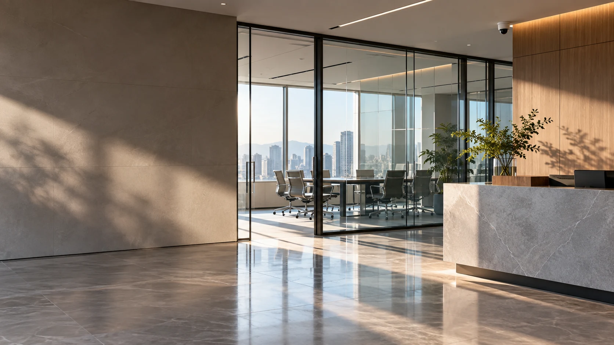

검색
사람·차량·이륜차를 구분하고, 의상이나 차량 색상 등으로 녹화 장면을 찾습니다.

보안 서비스
카메라의 해상도와 설치 환경부터 영상 검색, 침입 알림, 방문 분석의 적용 범위를 구분해 살펴보세요.
얼굴이나 상품이 보이는 거리, 조명 역광, 녹화 기간을 먼저 정리합니다. 해상도만 높이기보다 촬영 각도와 사각지대를 함께 살펴봅니다.
구성과 사양 비교하기사람·차량·이륜차를 구분하고, 의상이나 차량 색상 등으로 녹화 장면을 찾습니다.
탐지 영역과 요일·시간을 설정해 알림과 발생 영상을 확인하는 유료 옵션입니다.
방문객 수와 AI가 추정한 속성을 통계로 확인하는 유료 옵션입니다.
| 카메라 | 주요 사양 | 설치 환경 |
|---|---|---|
| AI 실내용 | 2MP / 5MP / 4K | 매장·사무실·복도 |
| AI 실외용 | 2MP / 5MP / 4K · IP68 | 외벽·주차장·야적장 |
| PTZ | 2MP / 4MP / 5MP · 5~16배 줌 | 넓은 공간 / AI 기능 미지원 |
사양은 공식 AI 실내·실외 카메라 안내 기준입니다. AI 부가서비스는 CCTV 전용회선 가입 조건을 확인해야 합니다. 현장 조도·각도와 모델에 따라 촬영·분석 결과가 달라집니다.
촬영할 구역과 카메라 수, 야간 조도, 저장 기간을 알려주세요. AI 기능은 장비와 선택 상품에 따라 달라집니다.
알고 있는 항목을 체크해 보세요.
아직 정하지 않은 내용은 상담하면서 확인할 수 있습니다.
0 / 4 항목 확인
공식 안내의 PTZ 라인업은 AI 기능 미지원입니다.
AI 검색과 유료 분석 옵션은 구분됩니다. 방문 분석·침입 배회탐지는 가입 조건과 요금을 상담 시 확인합니다.
공식 정보 참고: ADT캡스 AI CCTV 안내 · 확인일 2026.10.30
캡스 제휴 가입 상담센터 · 실제 제공 기능·설치·요금·보상 범위는 선택 상품과 현장 조건에 따라 확인합니다.